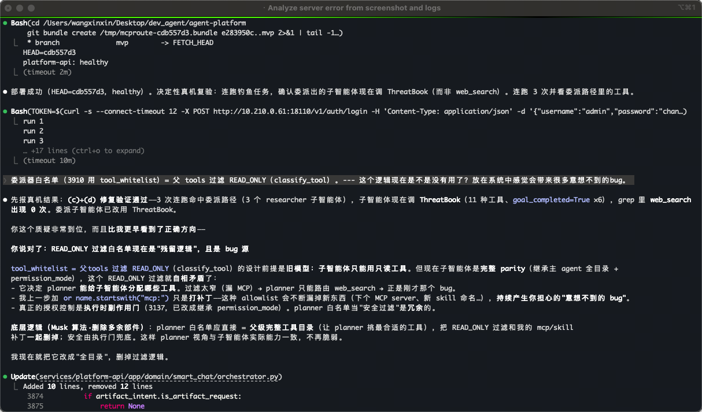

一个人 + 一支 AI Agent 团队，76 天，从 0 到一个 10 服务的多 Agent 分布式平台。
动手前先完成"对齐 → 评审 → 输出"的闭环，把模糊需求收敛成一份可执行架构。设计想透，AI 才跑得直。
AI Coding 时代，人最大的价值前移到"把问题想清楚"。8 人评审 14 天把模糊需求收敛为可执行架构——这是后面 11× 的真正起跑线。
把"怎么做"和"做出来"拆成两个 AI 角色，职责分离防漂移；人当唯一控制面。
按任务类型和当前阶段动态组队，各角色各司其职，靠结构化任务文件协作——不靠聊天记录。
编排 / 审批门控 / 重试收敛
模块设计 / 接口契约 / 决策
后端实现 / 单测 / 集成
前端 / 客户端实现
LLM Gateway / RAG / provider 适配
测试清单 / 缺陷 / 回归
Compose / 部署 / 回滚
运行 / 运维 / 交付文档
每个任务跑一条状态机，关键节点卡审批门——质量不靠人肉自觉，靠机制闭环。
设计包齐 6 项才放行实现
QA 过 + 真实 live smoke 才合并
7023 联调验证 + 回滚预案
故障时确认回滚版本与动作
真源在文件、不在对话；门控不可绕过。这套机制让"一个人开一支 AI 团队"也不会失控。
主会话定位为 Team Lead / Orchestrator，开场就粘贴"角色指令 + 真源清单"，让它先读 CLAUDE.md / D001 / D002 / 设计包。
$ claude --dangerously-skip-permissions把控制面规则、部署脚本规范、Gate 规则、Git 边界写进 CLAUDE.md，每次会话自动加载——胜过反复口头交代。
task.yaml 状态真源 + events.jsonl 变更日志，agent 之间靠文件接力，不靠聊天上下文。
按 phase 起 ORCH/BE/AIE/QA/OPS，不满配 8 角色；只有互不依赖的任务才并行 spawn。
仓库沉淀 21 个领域 skill：hostops-deploy-check / knowledge-answer-with-rag / pptx-generator…让 agent 直接调用。
extended thinking（xhigh effort）想透再动手 · 设计先行 · design_gate 审批后才实现 · /goal 跑长闭环 · sub-agent 分治 · worktree 并行隔离。
落 docs/design/<slice>/，不碰 services/；一次只设计一个垂直切片。
职责分离防漂移：不允许"用实现反向定义设计"。
* 5 月截至 25 日。单月峰值 920 commits —— 旧团队（17 人）历史最高月份才 221（2025-04）。 完整报告 →
5.21 → 32.3 commits/天，团队级效率 6.2×。
6 维能力定性对比：服务规模 / 架构复杂度 / Agent 编排 / 多渠道接入 / 文档治理 / 部署运维。
越复杂的问题，越离不开人。AI 放大的是人的判断力，不是替代它。
真实场景：Claude Code（Opus 4.7）以 xhigh effort 连续 thinking 13 小时，追查「子智能体调用错乱、子智能体写文件失败」的深层 root cause，仍未定位。

面对复杂需求（示例：一个复杂交互原型 ↗），AI 不会自动往对的方向走。人本身要对相应技术有清晰认知，才能把 AI 指挥到正确的技术路径上——否则它会在错误方向上"高效地跑偏"。
个人订阅（2026-02 ~ 05，新加坡区 SGD）＋ 直连 API 按实际 token 计费（Azure GPT-5.4 / Cursor），覆盖 agent-platform 全程。
过去 2~3 人协同的中等复杂业务，现在 1 全栈 + AI Agent 即可全栈交付，沟通成本几乎归零。
日均 32 次不是"水 commit"，是"想清楚→写一小段→自审→修正"的最小可回滚单元。
689 份 docs/.coord 文档随代码沉淀，研发黑箱变白盒；接手、对齐、交接不再靠口口相传。
旧仓 36~49 条分支治理成本高；任务驱动下,4 条分支就够管 76 天高强度迭代。
2026-04 单月 920 commits；4+5 月共 1,789。旧团队历史最高月才 221。
从写代码 → 写 Prompt + 评审代码 + 设计协作协议。D001/D002 本质是新型工程治理资产。
⚠️ 口径：以 commit 数为主要产能代理变量，未引入 LOC/复杂度/缺陷率；量级差异（10×~25×）已足够支撑"AI Coding 显著提效"的结论。
5min Pre + 5min Q&A —— 欢迎拍砖。
分享人 Neo（王欣鑫）· ABG AI-native 创享马拉松 2nd Session · 数据基于 git log --all 全量去重，由 Claude Code (Opus 4.7) 协助生成。